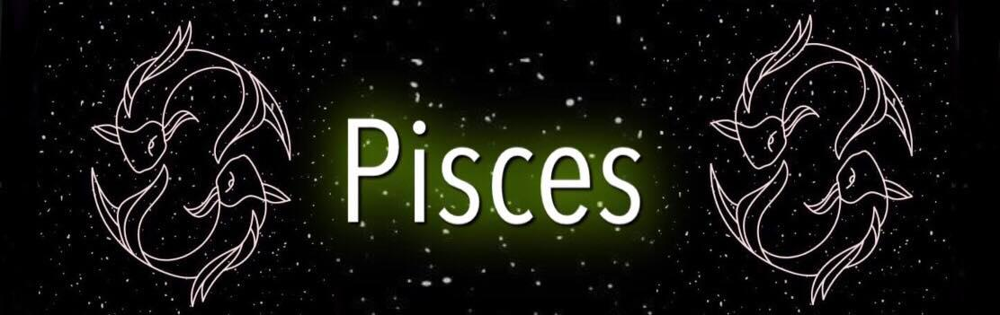
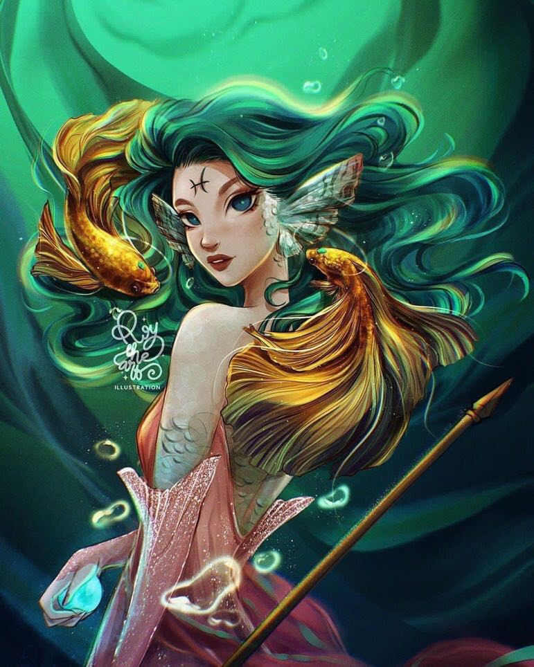

 |
|
Pisces are very friendly and often find themselves in company of very different people. They are selfless and always willing to help others, a very fine intent for as long as they don�t expect anything much in return. People born with their Sun in Pisces have an intuitive understanding of the life cycle and form incredible emotional relationship with other humans on the basis of natural order and senses guiding them.
Connected to art, music, and any sort of liberal expression, every Pisces representative has a talent they need to use to feel creative and free. Tolerant and compassionate, they could do too much for other people out of good intentions, forgetting about their own wellbeing in the process. The sign of Pisces is a Water sign, ending the cycle of Cancer and Scorpio, being the one to disperse everything that happened in the past and change anyone�s relative view on forgiveness. They are characterized by empathy and incredible emotional capacity, but only if they keep their boundaries strong and don�t let outer emotions overwhelm them.